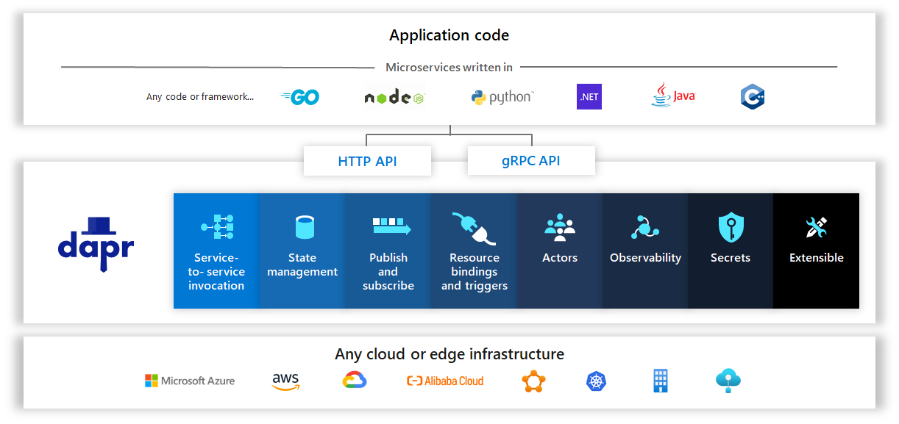

How Dapr works?
What is Dapr?
Dapr is a portable, event-driven runtime that makes it easy for any developer to build resilient, stateless and stateful applications that run on the cloud and edge and embraces the diversity of languages and developer frameworks.

For me, this statement is definition of a remarkable modern solution to many complexities so I wanted to try and built a geocoding service using libpostal integrated to dapr sidecar. My goal is not to write things that you can find in documentations or totally expired books. Instead, I want to share my experience about building a microservice for a machine learning model.
Why libpostal, because I was planning to write a tool using machine learning to parse and segment written addresses. This is a problem especially in countries like Turkey that there is no numeric address systems available. I came across with libpostal and found it beautiful and extendable.
Installation
My base setup is
- WSL2 / Ubuntu 20.04
- Docker for Windows WSL2 integrated
- Visual Studio Code
- Remote WSL
- Remote Containers
- Docker
- Terminal
To install dapr there are 2 different methods:
# From Dapr Documentation
wget -q https://raw.githubusercontent.com/dapr/cli/master/install/install.sh -O - | /bin/bash
Another way is to download the release package manually
# From Dapr Documentation
wget -q https://github.com/dapr/cli/releases/download/v1.0.0-rc.3/dapr_linux_amd64.tar.gz
tar -zxfv dapr_linux_amd64.tar.gz
cd dapr_linux_amd64
sudo dapr init
If you are having no issue with initialization of dapr you should see
Making the jump to hyperspace...
Downloading binaries and setting up components...
Success! Dapr is up and running
But unfortunately I had a couple of problems
- Docker needs to be installed and WSL2 integration needs to be enabled before installation of dapr
- You need to “sudo” for initialization
- If during the init, command freezes; Docker restart or Windows restart solved my issues.
To check of dapr is installed or not;
dapr --version
In this article I not going to describe kubernetes integration, but to enable locally, development cluster in Docker for windows needs to be enabled or with Minicube. Minicube installation in Windows is not as straightforward as Docker. Independent from advantages and maturity of solutions I recommend Docker + kubernetes enabled for development and testing.
#to enable kubernetes
dapr init --kubernetes
#to see status
dapr status -k
Installation of libpostal
To install libpostal;
sudo apt-get install curl autoconf automake libtool pkg-config
git clone https://github.com/openvenues/libpostal
mkdir /opt/postaldata
chmod 777 /opt/postaldata
cd libpostal
./bootstrap.sh
./configure --datadir=/opt/postaldata
make
sudo make install
# Recommended from Documentation
sudo ldconfig
For the go bindings
pip install postal
Unfortunately this installation created some problems. To test my code I switched to 18.04.5 LTS.
Address Parser Service
from postal.parser import parse_address
import cherrypy
class adrsvc(object):
@cherrypy.expose
@cherrypy.tools.json_out()
@cherrypy.tools.json_in()
def parse(self):
adrstr=cherrypy.request.json
return parse_address(adrstr)
if __name__ == '__main__':
config = {'server.socket_host': '0.0.0.0'}
cherrypy.config.update(config)
cherrypy.quickstart(adrsvc())
To attach to a dapr sidecar;
dapr run --app-id adrsvc --app-port 8088 --dapr-http-port 8089 python adrsvc.py
What are the benefits and common capabilities of dapr

Most important capability apart from the functionalities above is; Dapr offers a unified programming model that delivers capabilities through a standardized HTTP/gRPC protocol.
gRPC is a modern, high-performance framework that evolves the age-old remote procedure call (RPC) protocol. At the application level, gRPC streamlines messaging between clients and back-end services. Originating from Google, gRPC is open source and part of the Cloud Native Computing Foundation (CNCF) ecosystem of cloud-native offerings. CNCF considers gRPC an incubating project.
There are more to learn about dapr for me. I think e2e dapr capabilities are compressed version of various paradigms of today cloud computing and a must have, must learn and use in modern application development scenarios.